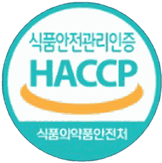
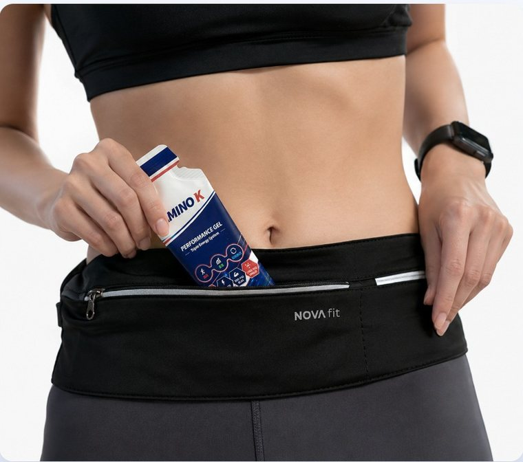
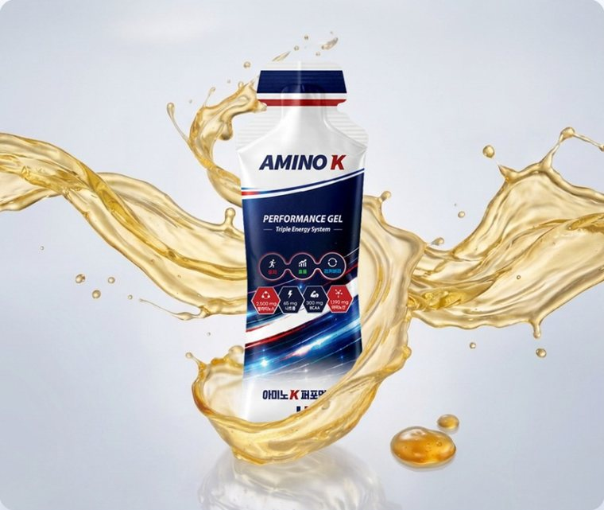
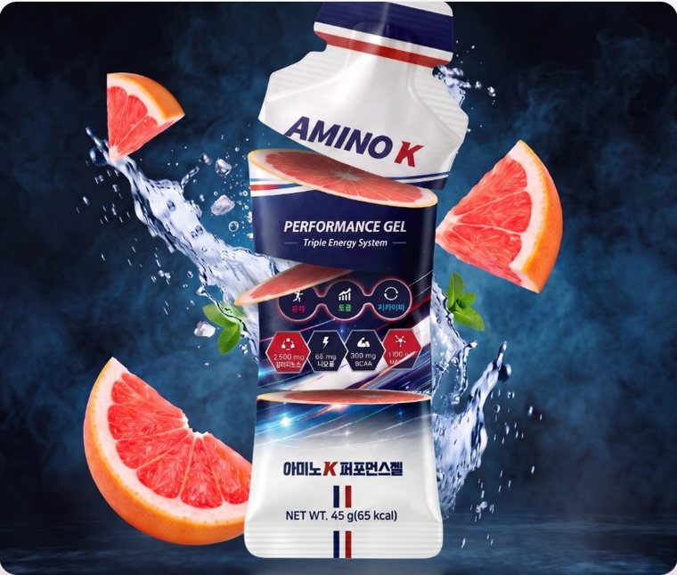

지구력 스포츠
“30km 지점마다 찾아오던 봉크(Bonk) 현상이 사라졌습니다. 상쾌한 자몽맛이라 물 없이도 깔끔합니다.”
김O진 선수마라톤 풀코스 선수
LK SQUARE — SPORTS NUTRITION
LK Square의 첫 번째 제품, AMINO K.
트리플 에너지 시스템으로 설계된 퍼포먼스 젤.
실력이 부족해서가 아닙니다. 저장된 글리코겐은 60~90분이면 급격히 줄어들고, 연료가 비는 순간 페이스는 정해진 것처럼 무너집니다.
ENERGY SURGE
떨어지던 곡선은 되돌릴 수 있습니다. 즉각 흡수되는 포도당이 먼저 불을 붙이고, 팔라티노스가 그 힘을 끝까지 밀어 올립니다.
AMINO K FILM
그 힘이 어떻게 차오르는지, 직접 보세요.
마라톤부터 사이클까지, 종목의 한계가 갈리는 지점에서
직접 써 본 선수들의 이야기입니다.
“30km 지점마다 찾아오던 봉크(Bonk) 현상이 사라졌습니다. 상쾌한 자몽맛이라 물 없이도 깔끔합니다.”
“3세트 코트 체인지 때 먹어주면 세트 후반부 풋워크 스피드와 선명한 집중력이 끝까지 유지됩니다.”
“하프타임에 1포 먹고 나면 후반전 종아리 쥐(경련) 걱정 없이 전력 질주할 수 있습니다.”
“9홀 종료 후 먹으면 속도 가볍고 후반 18홀까지 완벽한 코어 체력이 유지됩니다.”
“워터리 겔 제형이라 라이딩 중 짜 먹기 편하고, 자몽 산미가 장시간 페달링 피로를 깨워줍니다.”
스포츠 현장 시뮬레이션 선수 체감 테스트까지,
체육학 박사인 대표이사가 직접 검증한 단 하나의 겔
* 실제 사용자 인터뷰에서 발췌한 내용이며, 주관적인 내용으로 개인차가 있을 수 있습니다.
ABOUT LK SQUARE
Mission. 스포츠 현장에 대한 깊은 이해와 과학적 뉴트리션을 통해, 모든 선수가 한계를 넘어 자신만의 최상의 퍼포먼스를 발휘하도록 돕습니다.
Vision. 현장 중심의 스포츠 과학 솔루션을 기반으로, 선수의 삶과 스포츠 문화를 바꾸는 No.1 퍼포먼스 뉴트리션 리더.
BRAND STORY
시작은 브랜드가 아니라, 한 아버지의 걱정이었습니다. 쌍둥이 두 아들이 야구를 시작했고, 저는 주말마다 그라운드 뒤편에서 아이들의 경기를 지켜봤습니다. 잘 던지고 잘 치던 아이들이 후반 이닝에 접어들면 눈에 띄게 흔들렸습니다. 실력이 부족해서가 아니었습니다. 연료가 먼저 바닥났을 뿐이었습니다.
그날부터 아이들에게 먹일 것을 찾아다녔습니다. 그런데 손에 잡히는 제품마다 카페인이 들어 있거나, 함량이 적혀 있지 않거나, 무엇이 들었는지 끝까지 확인할 방법이 없었습니다. 성인 선수를 기준으로 만든 제품을, 이제 막 성장기에 들어선 내 아이에게 그대로 건넬 수는 없었습니다.
그래서 기준을 딱 하나로 정했습니다. “내 아들 가방에 넣어 보낼 수 없는 것은, 다른 집 아이에게도 권하지 않는다.” 성분을 하나 넣고 뺄 때마다 이 질문을 반복했고, 스포츠 영양학 연구진과 아미노산 전문가가 그 질문에 과학으로 답했습니다.
무카페인, 도핑프리, 그리고 전 성분 함량 공개. 화려한 문구를 덜어내는 대신 뒷면에 적힌 숫자로 증명하기로 했습니다. 부모의 눈으로 검증하고 전문가의 손으로 설계한 한 포, 그것이 AMINO K입니다.
AMINO K는 마케팅으로 만든 제품이 아니라,
부모의 마음으로 만든 제품입니다.
LK SQUARE — FOR EVERY ATHLETE'S LAST INNING
4-CUT STORY
“7회. 갑자기 팔이 무거워졌다.”
잘 던지던 선수가 후반에 흔들립니다. 야구도, 마라톤도, 축구도 똑같습니다.
“실력이 아니라, 연료였다.”
정신력의 문제가 아닙니다. 몸에 저장된 연료는 60~90분이면 급격히 줄어듭니다.
“경기 15분 전, 한 포.”
포도당이 먼저 불을 붙이고, 팔라티노스가 그 힘을 끝까지 밀어 올립니다.
“마지막 이닝까지, 내 힘으로.”
무카페인 · 도핑프리. 유소년부터 엘리트까지, 훈련한 만큼 끝까지 쓰기 위해서.
훈련은 이미 충분히 했습니다.
남은 건 끝까지 버틸 연료뿐입니다.
* 섭취 타이밍과 양은 종목·체중·운동 강도에 따라 달라질 수 있습니다.
FOUNDING TEAM
스포츠 현장에서 경험한 선수들의 니즈와 과학적 근거, 아미노산 기술력을 바탕으로 AMINO K를 디자인했습니다.
스포츠 현장과 선수의 삶을 연구해 온 체육학박사로서, 최상의 퍼포먼스를 위한 가장 정직한 답을 건넵니다.
오랫동안 스포츠 현장을 탐구하며 수많은 선수들의 삶과 환경을 가까이서 연구해 왔습니다. 승리의 환호 뒤에 숨겨진 피나는 노력, 그리고 경기 후반 결정적인 순간에 찾아오는 체력적 한계와 좌절을 현장에서 수없이 목격했습니다.
“선수들이 훈련한 만큼, 자신의 역량을 100% 발휘할 수 있는 환경은 어떻게 만들어지는가?” “왜 수많은 선수들이 경기 후반 10분의 고비를 넘지 못하고 무너지는가?” 그 답은 개인의 정신력이나 의지가 아니라, 선수를 둘러싼 스포츠 생태계와 과학적인 영양 지원 시스템이 결합될 때 완성된다는 것을 깨달았습니다.
이에 스포츠 영양학·생리학 분야 최고의 연구진과 함께 현장의 요구를 정밀하게 분석해 AMINO K Performance를 탄생시켰습니다. 저희는 현장의 목소리와 선수의 마음을 누구보다 잘 이해하는 스포츠 전문가 그룹입니다. 선수 한 사람 한 사람의 땀방울이 온전한 결실로 이어지도록, 가장 안심할 수 있고 진정성 있는 솔루션만을 제공하겠습니다.
FIRST LAUNCH
하나의 젤에 세 가지 힘을 담았습니다. 빠르고 오래가는 에너지 공급, 에너지 효율의 극대화, 그리고 빠른 회복까지. 트리플 에너지 시스템, AMINO K의 핵심입니다.
성분부터 사용 환경까지, 아미노 K가 다른 이유를 확인하세요.
WHY AMINO K
빠른 + 지속에너지 — 빠르고 지속적인 에너지 공급
회복까지 고려 — 회복까지 설계
| 항목 | AMINO K | 일본 A사 | 국내 기존제품 |
|---|---|---|---|
| 핵심 구성 | 탄수화물 + 아미노산 | 아미노산 중심 | 단순당 중심 |
| 주요 목적 | 퍼포먼스 유지 | 근육 회복 | 에너지 공급 |
| 에너지 특성 | 빠른 + 지속 에너지 | 보조적 에너지 | 빠른 공급 후 급락 |
| 퍼포먼스 유지 | 끝까지 유지 | 제한적 | 유지 어려움 |
| 회복 기능 | 회복까지 고려 ✓ | 중심 기능 | 부족 |
| 정체 설계 | 통합 퍼포먼스 설계 | 단일 기능 | 단일 기능 |
← 표를 좌우로 밀어서 보실 수 있습니다 →
AMINO K 는 퍼포먼스 전체를 설계합니다.
WHAT'S INSIDE

이중 탄수화물 설계로 빠르게 공급되고 끝까지 유지되는 에너지 설계
* 제품이 아닌 원료에 대한 설명입니다.
간편한 휴대, 먹기 편한 제형, 상큼한 자몽의 맛을 확인하세요.

러닝 벨트에도 부담 없이. 필요한 순간 꺼내서 바로 섭취하세요.

물처럼 부드럽게 넘어가 달리는 중에도 목메임 없이 삼킬 수 있습니다.

아미노산의 쓰고 비린 맛 없이, 상큼한 레드자몽 맛으로 운동 중에도 부담없이 섭취할 수 있습니다.
SPORT GUIDE
* 표준 운동 환경 및 체중 기준 가이드입니다. 체력과 운동 강도, 날씨에 따른 땀 배출량에 맞춰 유연하게 조절하세요.
OFFICIAL LAUNCH

LK Square의 첫 번째 제품을 스마트스토어에서 만나실 수 있습니다.
스마트스토어 페이지로 새 창에서 연결됩니다
NUTRITION FACTS
| 나트륨 | 640mg | 32% |
|---|---|---|
| 탄수화물 | 137g | 42% |
| 당류 | 121g | 121% |
| 단백질 | 21g | 38% |
| 지방 | 0g | 0% |
| 포화지방 / 트랜스지방 | 0g / 0g | 0% |
| 콜레스테롤 | 0mg | 0% |
| 비타민 B1 | 15mg | 1,250% |
| 비타민 B2 | 10mg | 714% |
| 비타민 B6 | 15mg | 1,000% |
| 나이아신 | 150mg NE | 1,000% |
1일 영양성분 기준치에 대한 비율(%)은 2,000 kcal 기준이므로 개인의 필요 열량에 따라 다를 수 있습니다.
PRODUCT INFO
| 제품명 | 아미노 K 퍼포먼스젤 |
|---|---|
| 식품유형 | 혼합음료 |
| 내포장재질 | PE(폴리에틸렌) |
| 원재료 및 함량 | 정제수, 함수결정포도당, 팔라티노스, 레드자몽농축액(이스라엘산), 글루콘산마그네슘, 사양벌꿀(국산), 향료(자몽향), L-아르지닌, 타우린, 구연산, 혼합제제(카라기난·로커스트콩검·잔탄검·구연산삼나트륨·염화칼륨·포도당), 혼합제제(L-로이신·L-이소로이신·L-발린·레시틴), L-라이신염산염, 구연산나트륨, 글리신, 곡류가공품(영국산), DL-사과산, 효소처리스테비아(감미료), 정제소금, 니코틴산아미드, 비타민B1염산염, 비타민B6염산염, 비타민B2, 혼합제제(말토덱스트린·구연산삼나트륨·구연산·비타민B12), 판토텐산칼슘 |
| 섭취량 및 섭취방법 | 운동 전·중·후 1포 섭취하시오. |
| 섭취 시 주의사항 | 특정 성분에 알레르기 체질이신 분은 섭취 전 원료 성분을 확인 후 섭취하십시오. 개봉 또는 섭취 시 포장재에 의해 상처를 입을 수 있으니 주의하십시오. 한 번에 섭취할 경우 목에 걸릴 수 있으니 잘 씹어서 섭취하십시오. |
| 보관 시 주의사항 | 개봉 전 직사광선을 피하여 서늘한 곳에 실온 보관하시고, 개봉 후에는 반드시 냉장보관 후 빨리 섭취하시기 바랍니다. |
| 소비기한 | 별도 표기일까지 |
| 제조원 / 판매원 | ㈜웰파인 (강원특별자치도 횡성군) / ㈜엘케이스퀘어 (충청북도 충주시) |
| 소비자상담실 | 0502-1914-4874 |
본 제품은 식품이며 질병의 예방·치료용 의약품이 아닙니다. 부정·불량식품 신고는 국번 없이 1399